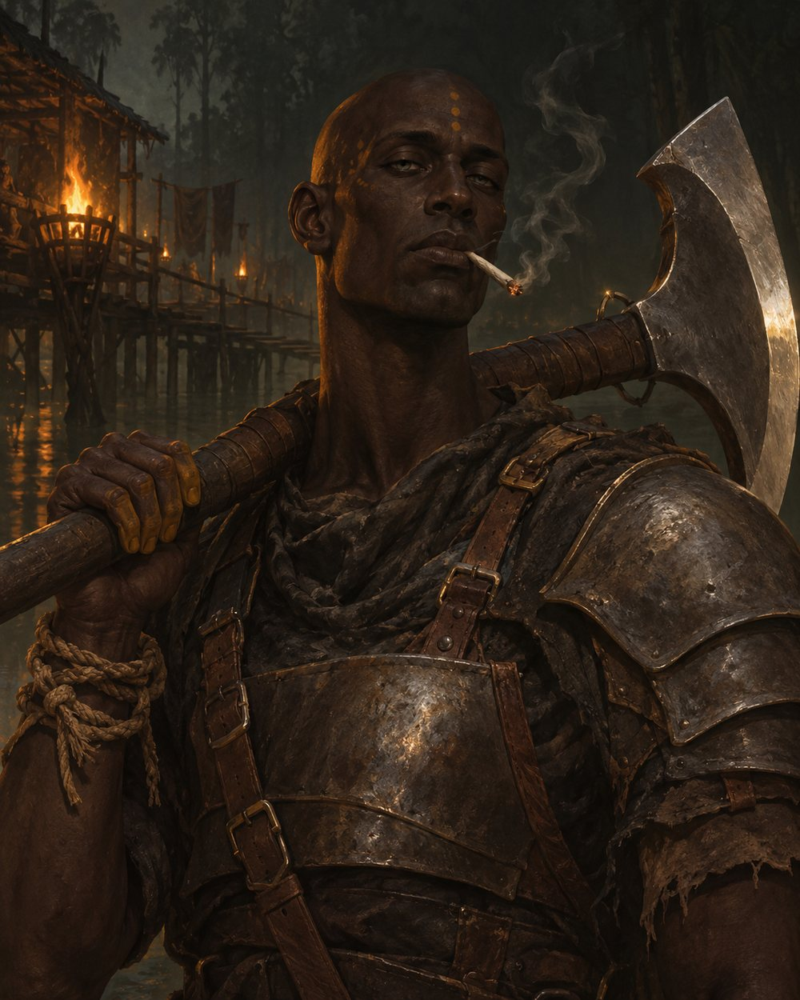

Страж Братства Спящего, Болотный лагерь
«Сталь не ошибается. Топор не лжёт. Лгут и ошибаются только люди.»

Со слов того, кто продаёт ему болотник
Первое, что надо про него понять: он не лжёт. Совсем. Спросишь, и он ответит ровным голосом, без нажима, как зачитывают приговор, и ответ тебе не понравится. Я однажды спросил, сколько людей он убил. Он назвал число. Подумал и добавил, что не считает тех, кто умер потом, от ран. С тех пор я задаю ему один вопрос: «Сколько?» Имею в виду косяки.
Голос он не повышает никогда. За год я не слышал от него ни крика, ни смеха в голос. Когда злится, молча встаёт, уходит на край мостков и курит, пока не отпустит. Возвращается и продолжает с того слова, на котором остановился. Злость его видно только по окуркам, которые потом плавают в протоке.
Девятнадцать косяков в день. И всё равно я, тот, кто продаёт ему каждый, не могу сказать, обкурен он сейчас или трезв. Глаза у него всегда одинаковые. Голос тоже. Это пугает больше топора.
В Спящего он верит, как пёс верит в руку, которая держит поводок. Учение ему ни к чему. Гуру говорят про пробуждение и свободу за Барьером, он кивает и ничего из этого не повторяет. Ему нужно, чтобы был хозяин и чтобы хозяину был нужен топор. Раньше хозяином был Белиар, теперь Спящий. Ошейник другой, пёс тот же. Люди в этом не участвуют вовсе.
— Все виновны. Вопрос только в приговоре.
У него в голове кричат. Все, кого он казнил, начиная с первого. Он зовёт их хором. Когда хор громкий, Зешт глохнет: смотрит на тебя и не слышит, отвечает невпопад, а пальцы сами вяжут узлы на верёвке, намотанной на запястье. Узел, ещё узел, потом развязать всё. Иногда он шепчет им «тише». Не зло. Так говорят с детьми, которые не могут уснуть. Хор, по его словам, послан Спящим как испытание, а болотник как милость. Милость продаю ему я, по куску руды за скрутку.
Послушников он наказывает ровно сколько велено. Сказали десять ударов, будет десять, и он считает вслух. Одиннадцатого не будет, даже если провинившийся плюнет ему в лицо: за плевок нужен отдельный приказ, и его, будь уверен, отдадут. Послушники боятся его меньше, чем других стражей, потому что он не добавит от себя. Плохо, что и не убавит.
Просить он не умеет. Однажды ночью у него кончился болотник, а я уже спал. Он не постучал. Сел у моей хижины и просидел до утра, вязал и развязывал узлы. К рассвету руки ходили так, что верёвка выскальзывала. Я вынес ему пять скруток и записал в долг. Он кивнул и ушёл. Долг он вернёт, слово он держит так же крепко, как топор. Поэтому я и даю ему в долг. И потому, что отказать боюсь.
С тишиной у него хуже, чем с хором. Когда болотник берёт как надо и хор смолкает, он не знает, куда девать руки. Тогда он достаёт палочки, ровные, я сушу их для него отдельно, и складывает шалашик: две так, две поперёк, слой за слоем, пока башенка не встанет ему по колено. Потом вытягивает по одной, пока она не рухнет. Играет один, но ходит так, будто игроков двое. Палочки свои никому трогать не даёт. Кроме топора, это единственное, с чем он обращается бережно.
Смеётся он раз в луну, коротко, носом, когда кто-нибудь неуклюже свалится с мостков или уронит миску. Я спросил, что тут смешного.
— Брат так падал.
И до ночи больше ни слова.
Сталь не ошибается.Топор не лжёт.Лгут и ошибаются только люди.
В бою его ставят в первый ряд, туда, где умирают первыми. Он считает это честью, стражи считают удобством. Кто прав, ему безразлично.
Боится он трёх вещей, про все три он сказал мне сам: что кончится болотник, что Спящий замолчит, что он окончательно сойдёт с ума. Четвёртую, главную, он не говорил, я её подслушал. Он боится, что крики однажды станут словами.
Должен на сегодня40 руды
Если увидите его впервые
Он выше меня на две головы. Когда он пришёл в Старый лагерь, тело у него было такое, какое делает арена: плечи, шея, ни одной лишней жилы. За год болотник съел с него, может, четверть. Мясо уходит, кости остаются. Доспех стража ещё сидит, но ремни он затягивает на две дырки туже, чем в день посвящения.
Кожа тёмная, островная, на болоте она посерела. Голову и лицо он бреет каждое утро одним и тем же ножом. На лбу и висках метки Братства, совсем свежие. Глаза светлые, как вода в бочке, у островитян я таких не видел. Моргает он редко, смотрит прямо и чуть сквозь, веки всегда полуопущены, будто он смертельно устал или только что затянулся. Что из двух, не угадаешь.
Двигается медленно и тяжело. Говорит ровно, без подъёмов и спусков, и любая его фраза звучит как последняя. Доспех чистый, ремни смазаны, на топоре ни пятна. За собой он так не следит, за ними следит.
Не гадайте, обкурен он или нет. Сойдите с мостков и дайте пройти.
IБрего, остров Тин. Детство
Дальше то, что я собрал по кускам. Часть он сказал мне сам. Часть я услышал ночью, когда он говорил с хором и думал, что все спят. Я сплю плохо, у меня товар под подушкой.
Зешт родился в Брего, на острове Тин, при храме Белиара, что стоит у реки ниже древних руин. Тин давно обеднел: золото в штольнях кончилось, старатели разъехались, а храм остался, и жрецы толкуют там закон, как и везде на островах. Родился он рабом. Рабами храма были его мать и отец, а на островах ребёнок двух рабов принадлежит тому же хозяину. Родился не один. Их было двое, близнецы, одно лицо на двоих. О родителях я от него ни разу не слышал. Слышал про брата.
Они играли в шалашик. Островная забава: из палочек складывают башенку, слой поперёк слоя, а потом вдвоём по очереди вытаскивают по одной. Чья палочка обрушила башню, тот проиграл. Брат проигрывал почти всегда, потому что торопился. И падал всё время на ровном месте. Это я уже знаю.
В тринадцать их приставили к писцам: носить свитки, чистить чернильницы, не дышать в сторону страниц. Однажды вечером они сложили шалашик прямо на столе, башня рухнула, и опрокинутая чернильница залила лист храмовой летописи. Летопись жрецы ценят выше золота: в ней записано, кто кем был и кому что принадлежит. Казнить обоих жрецы не стали. Дали мальчишкам по ножу и поставили друг против друга: жить оставят того, кто ударит первым. Это я знаю от него самого, спросил прямо, и он прямо ответил.
Остальное я знаю только из ночного шёпота, и записывать это мне неспокойно.
Брат, говорит он хору, ножа не поднял. Сказал: «Сыграем?», как говорил каждый вечер. А Зешт ударил.
— Ты же сам опустил. Сам.Ночью, в темноту, три раза
Что это значит, я тогда не понял и не хочу понимать теперь. В хоре, который он слышит, брат громче всех. Это он сказал мне сам, днём, спокойно, как говорят про дождь.
IIБрего, с тринадцати до девятнадцати
Жрецы слово сдержали: он остался жить. Жить при храме, топором Белиара. А ещё ему пообещали свободу. На островах раба можно отпустить, и жрецы сказали, что за верную службу отпустят и его.
Шесть лет он рубил головы, вешал, клеймил, порол и пытал на допросах тех, кого ему приводили. По праздникам на площади, при всём острове. Я спросил, каково это было.
— Как мяснику с мясом.
Без гордости и без отвращения. Работа. Люди на острове его к себе не подпускали. Хлеб оставляли на камне у храмовой стены и отходили, пока он не заберёт. Руками его не касался никто, кроме тех, кого он держал за волосы. Говорит он об этом без обиды: так и надо, палача не трогают.
На казнях рядом с ним всегда стоял жрец. Жрецы на островах ещё и маги, и пока Зешт поднимал топор, над приговорённым читали что-то своё. Что это было, он не объясняет. Говорит только, что после их слов люди кричали иначе. Дольше.
Хор начался с первой казни, с брата. Каждая новая прибавляла голос. К девятнадцати их стало столько, что он перестал различать, кто есть кто. Кроме одного.
Болотную траву он видел и там: её везут с Найдану, и рабы на пристани курили её тайком, пока надсмотрщик смотрел в другую сторону. Сам он не пробовал ни разу. Почему, не говорит.
Свободы он так и не дождался. В девятнадцать он стал жрецам не нужен. За что, не знает или не говорит. Про обещание никто не вспомнил: его продали работорговцам, и с первым же кораблём он ушёл в Нинду на Матае, в огромный лагерь, куда свозят рабов со всех островов. Он не сопротивлялся. Хозяин сменился, только и всего.
IIIВарант, десять лет
Купили его ассасины. Поначалу он делал у них то же, что и на острове: рубил, вешал, допрашивал. Ассасины ценят тех, кто умеет развязать язык и не убить раньше времени. Он умел.
Потом его выставили на арену. Толпа его не любила: он убивал быстро и без представления, удар, второй, и на песке тело. Хозяевам это нравилось, потому что дёшево и надёжно. Я спросил, почему быстро.
— Чтобы в хоре было меньше крика.
Подумал и поправился:
— Короче крик.
Дрался он грязно, по-аренному: песок в глаза, локоть в горло, колено куда придётся. Так дерётся и сейчас, и стражи, которых Кор Ангар учил по правилам, этого не любят. Там же, в Варанте, он получил клеймо на шею и полосы на спину. Там же его однажды распороли от рёбер до бедра.
Встать на ноги он не успел: в город пришла армия Миртаны. Его взяли раненым вместе с другими людьми ассасинов и записали военнопленным. Пленных король Робар отправлял в одно место, за Барьер, в шахты. Ему было двадцать девять. Я спросил, считает ли он, что заслужил Барьер.
— Мало дали.
IVДолина рудников, год назад
Его спустили у пункта обмена. Стражники Гомеза встречают новеньких одинаково: кулаком в лицо, чтобы сразу понял, где он теперь. Зешт ответил. Одному он что-то сломал, и тот, говорят, помнит его до сих пор. Потом его били толпой, пока он не лёг. Пока его спускали, он молился. Белиару, по старой привычке. Насколько я знаю, это была его последняя молитва Белиару.
Четыре месяца он копал в Старой шахте. Ни с кем не разговаривал. Копал, ел, спал, слушал одного из Идолов, который тогда ходил в Старый лагерь звать людей к Спящему. Всю руду, что ему платили, он нёс мне.
Первый косяк я продал ему у ворот, вечером. Он затянулся, задержал дым и замер. Стоял долго. Потом сказал одно слово:
— Тихо.
Я решил, что он про лагерь, который как раз затихал к ночи. Я ошибался.
Он приходил каждый день, потом дважды в день. К концу третьего месяца я понял, что он отдаёт мне всё до куска и ест то, что перепадёт. Тогда я сказал ему, что на болоте болотника больше, чем он успеет выкурить. Сказал, чтобы продать. Чтобы его руда шла в Братство, а не мимо.
Я сам привёл его на болото. Это надо записать именно так.
VБолотный лагерь, послушник
Послушником он резал болотник на полях и сторожил их по ночам. Работал молча, как в шахте, только курил теперь больше и дешевле. На медитациях сидел у храма неподвижно, как свая. Гуру решили, что он глубоко верует. Он и верил, только не так, как им казалось.
За него поручился один из стражей. Имени его я здесь писать не стану. Скажу только, что этому стражу нужен был цепной пёс: большой, послушный, такой, кого не жалко пустить первым. Зешт это видит. Ему всё равно. Цепь так цепь, лишь бы был хозяин.
Перед посвящением его испытали: ночь медитации у храма, без болотника. Для любого другого пустяк. Для него ночь, когда хор не замолкает ни на миг.
Я подглядывал с мостков. Он не медитировал. Достал палочки и строил шалашик. Всю ночь. Руки тряслись, башня падала, он собирал её заново. Под утро она стояла, ему по колено. Он посмотрел на неё, вытащил палочку снизу, и башня рухнула. Чей это был ход, его или брата, я не знаю.
Потом он встал, пошёл к гуру и сказал одно слово.
— Готов.
VIБолотный лагерь, дальние поля
Стражем его сделал не гуру, а болотная акула. Тварь вылезла из протоки и утащила послушника, мальчишку, который резал болотник рядом с Зештом. Воды там по пояс, а в иле вязнешь по грудь. Никто не полез. Зешт полез, с раной в боку, которая и без того не давала ему дышать. Без топора, топора у него тогда не было, только серп для болотника.
Что было в воде, видели немногие. Акула всплыла брюхом вверх. Зешт выбрался и выволок за собой то, что осталось от послушника. Осталось немного.
Он положил это на мостки, сел рядом и молча докурил косяк до самых пальцев. Потом встал и пошёл резать болотник дальше.
С моста всё это видел Кор Ангар. Через неделю Зешт носил доспех стража. Многим это пришлось не по нраву: восемь месяцев в Братстве, и уже страж. Вслух никто ничего не сказал. С тех пор вокруг него держится холод, и никто его специально не нагоняет.
При посвящении ему выдали двуручный топор, широкий и тяжёлый. Он взял его, взвесил, повёл кистью, проверяя баланс, как берут знакомую вещь. Тогда я впервые подумал, что арена не всё, что у него было до нас. Я спросил, есть ли у топора имя.
— Это железо.
Чистит он его после каждой крови, долго.
VIIБолотный лагерь, ныне
Сейчас он стоит у ворот лагеря, у храма и на полях. Ходит в Старую шахту бить ползунов для Кора Галома. Сопровождает торговцев в Старый лагерь, меня тоже. Наказывает провинившихся послушников. Приказы выполняет без вопросов, своеволия за ним не замечено ни разу. Иногда мне кажется, что своей воли у него нет вовсе. Есть хозяин, есть топор, есть хор.
В бою он сильный и выносливый, боли не замечает и спокоен так, что становится не по себе. Противника видит насквозь, добивает не колеблясь. Но он медленный, а с раной в боку быстро не развернуться. Отступать не умеет, из лука и арбалета не стреляет. Без болотника у него дрожат руки, а когда хор громкий, он глохнет посреди драки. Руны Братства учит, но идёт тяжело: магия, говорит, шумит.
После каждого боя у него одно и то же: сразу закуривает, долго чистит лезвие, потом сидит и слушает. Я однажды спросил, что он слушает.
— Стало ли их больше.
На храмовых службах он стоит у дальней стены. Все смотрят на Ю'Бериона, а я смотрю на него. Губы у него шевелятся: тише, тише. Хор, говорит он, громче всего в храме. Почему, он не знает. Я тоже не знаю, и мне это не нравится.
Гуру говорят, что Спящий скоро проснётся. Будет Великая церемония, и избранные встанут рядом. Зешт хочет стоять рядом. Это единственное, чего он хочет вслух. Что ему нужно на самом деле, он не знает сам. Может быть, тишины. Такой, которую не надо курить.
Я жду церемонию, как и весь лагерь. Но боюсь того же, чего боится он: что в ту ночь хор наконец заговорит словами, и он услышит, что они говорили ему всё это время.
И ещё. Вчера у пункта обмена спустили новую партию. Среди них был человек с островов: тёмный, бритый, с храмовыми знаками на руках. Он долго смотрел в сторону болот, будто кого-то искал. Зешту я пока не сказал.
Ночью, у старой сваи, хор замолчал. Остался один голос.
Сыграем? Твой ход.